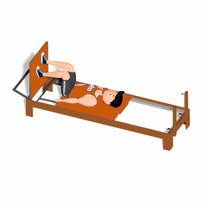

Jump Cross Country

O exercício trabalha o fortalecimento dos músculos do quadríceps, glúteos, abdômen e panturrilha.
Ficha Técnica
Tipo: Pilates
Grupo Muscular: Perna
Aparelho: Nenhum
Músculos: Nenhum
Como realizar
- Em decúbito dorsal, deixe os quadris e joelhos próximos de 90º com os pés apoiados na plataforma deixando um pé um pouco acima do outro;
- Pressione a plataforma com o objetivo de saltar, estendendo os joelhos e alternado a perna de baixo com a de cima;
- Retorne à posição inicial com os pés invertidos.
 RC STORE
RC STORE